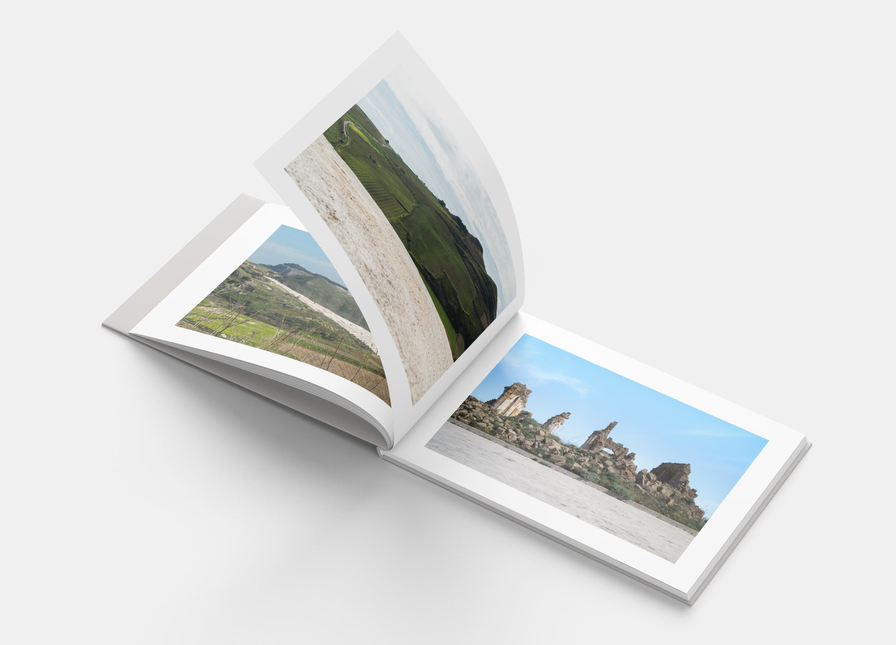

Il progetto “Fratture” vuole raccontare quella che oggi è la Valle del Belice, in cui le città di Gibellina e Poggioreale sono state colpite da un forte terremoto nel 1968.
La città di Gibellina è stata trasformata in opera Land Art da Alberto Burri (da qui il nome “Cretto di Burri” o, come viene comunemente chiamato “Cretto di Gibellina”) ricalcando con il cemento bianco quelle che erano le vie reali di Gibellina prima della catastrofe ed ingabbiandone le macerie. Il Cretto si presenta come un insieme di fratture sul terreno e congela la memoria storica della città.
Poggioreale, invece, vede le sue strade ed edifici ancora oggi gravemente danneggiati e pericolanti. Si è deciso di ricostruire la città in un luogo limitrofo e lasciare i resti della “vecchia” città al 1968. Il terremoto ha devastato la vita di questi paesi e ha causato numerose vittime, oggi rappresentate nelle fratture. Sono vie silenziose quelle che il visitatore percorre oggi, nel rispetto di chi prima viveva e percorreva quelle strade. Gibellina è stata “ingessata” di bianco, Poggioreale abbandonata con le sue fratture scomposte.
“Fratture” sono quelle che questi due paesi hanno subito e continuano ad avere nonostante gli anni trascorsi.
Frattura come rottura di vite che non ci sono più, la ferita lasciato alla terra, il trauma inflitto agli sfollati.
Attraverso questa sequenza di immagini, ho voluto raccontare le fratture che ancora oggi sono presenti sul territorio, da un lato nel contrasto fra la grande area ricoperta di cemento bianco e la natura, dall’altro abitazioni distrutte che giacciono inermi.
